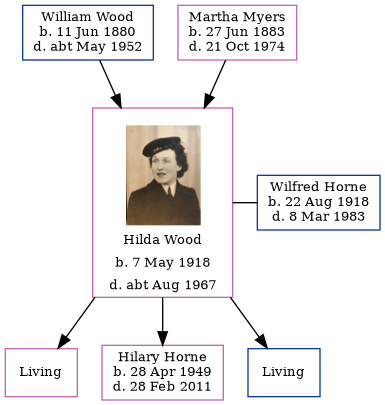

Hilda Horne (née Wood) 1918 - c1967
[ Home ] | [ Calendar ] | [ Surnames Index ] | [ Family History ]A confectioner's shop assistant and the daughter of William Wood (a plasterer) and Martha Myers, Hilda Wood, the wife of Wilfred George Horne (the uncle of Nigel Horne), was born in Tynemouth, Tyne and Wear, England on May 7, 19181,2,3 and married Wilfred (with whom she had 3 children: Gillian C, Hilary Ann and Adrian Keith, along with 2 surviving children) at St Peter's Church, North Shields, Tyne and Wear, England around Aug 19424 (Jul/Aug/Sep). On Sep 29, 1939, she lived on 2 Langley Road in Tynemouth1.
She died c. Aug 1967 in Tynemouth3.
Parents
- William Henry was born on Jun 11, 1880
- Martha Sarah Nicholson was born on Jun 27, 1883
Children
- Hilary Ann was born on Apr 28, 1949
Citations
- 1939 Register - Findmypast (was recorded at this address)
- England & Wales births 1837-2006 - Findmypast
- England & Wales deaths 1837-2007 - Findmypast
- England & Wales Marriages 1837-2005 - Findmypast
Media
Marriage of Wilfred George Horne to Hilda Wood

Hilda Wood
England & Wales marriages 1837-2008 - BMD/M/1942/3/AZ/000661/081
England & Wales marriages 1837-2008 - BMD/M/1942/3/AZ/001548/147
England & Wales deaths 1837-2007 - BMD/D/1967/3/AZ/000409/132
England & Wales births 1837-2006 - BMD/B/1918/2/AZ/001393/083
1939 Register - TNA/R39/2949/2949G/010/26
Family Tree
Generated by Ged2Site. Last updated on Jul 20, 2025